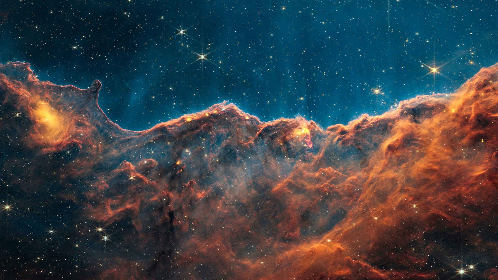

Explore the Planets
Discover the eight planets that make up our solar system.
Our Solar System
Our solar system is made up of the Sun, eight planets, dwarf planets, moons, asteroids, and comets. Each planet is unique and has its own features, atmosphere, and environment. Explore the planets and learn what makes each one special.

Mercury
Mercury is the smallest planet in our solar system and the closest planet to the Sun. It has a rocky surface covered with craters and experiences extreme temperature changes.

Venus
Venus is the second planet from the Sun and the hottest planet in our solar system. Its thick atmosphere traps heat, creating extremely high surface temperatures.

Earth
Earth is the third planet from the Sun and our home. It is the only planet currently known to support life and has liquid water covering much of its surface.

Mars
Mars is known as the Red Planet because of its reddish surface. Scientists study Mars because it has evidence of ancient water and may help us understand whether life ever existed beyond Earth.

Jupiter
Jupiter is the largest planet in our solar system. It is a gas giant famous for its Great Red Spot, a massive storm that has been observed for hundreds of years.

Saturn
Saturn is famous for its beautiful rings made mostly of ice and rocky material. It is the second-largest planet and is classified as a gas giant.

Uranus
Uranus is an ice giant with a blue-green color caused by methane in its atmosphere. It is unusual because it rotates on its side compared to most other planets.

Neptune
Neptune is the eighth and most distant planet from the Sun. It is a cold, blue ice giant known for having some of the fastest winds in our solar system.